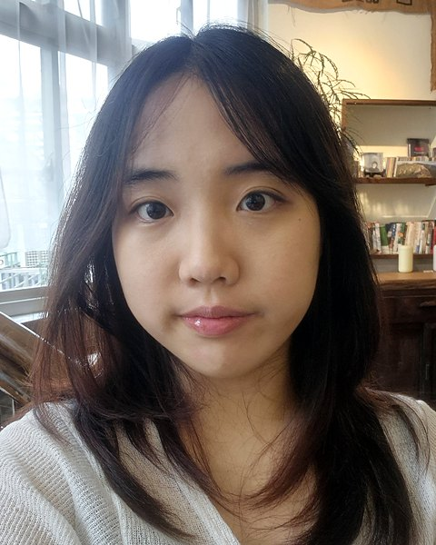

Kim Daim교육 · 서비스 기획자
학습자가 막히는 지점을 발견하고, 직접 만들고 검증하는 교육·서비스 기획자 김다임입니다.
교육공학의 요구분석과 교수설계, UX 리서치를 바탕으로 문제를 정의하고 Figma·FlutterFlow·n8n·Python·생성형 AI를 활용해 아이디어를 실제 경험으로 구현합니다.

발견–조사–설계–프로토타입–검증의 흐름을 지킵니다.
카드를 누르면 문제, 역할, 과정, 결과물을 자세히 볼 수 있습니다.
유아부터 고등학생까지 직접 가르치고, 팀과 동아리를 이끌었습니다.